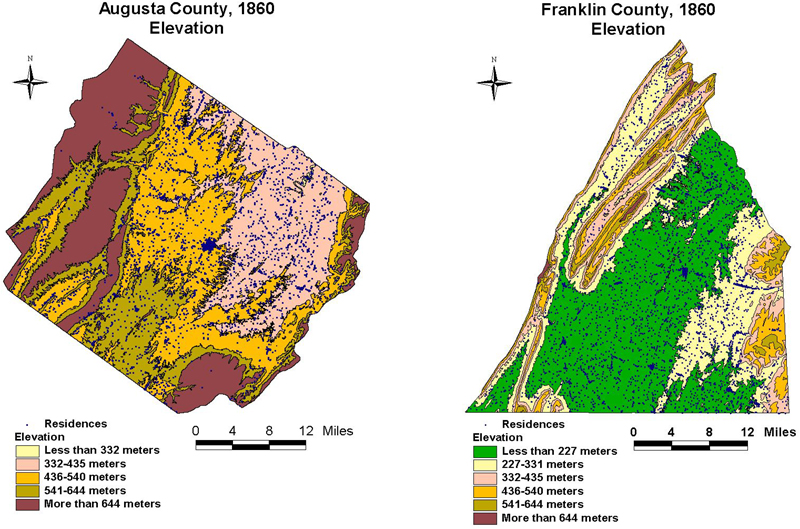

Franklin and Augusta: Elevation
This map set compares the elevations in both counties
with residences included. In both places residents lived at all
elevations, but settlement concentrated in the broad plains along
rivers and streams.

The maps are derived from a D. H. Davison map of
Franklin County, published in 1858 and a Jedediah Hotchkiss map of
Augusta County, published in 1870 and based on surveys completed
"during the war." The maps have been georeferenced at the Virginia
Center for Digital History, using ESRI Arc Info to produce a
Geographic Information Systems map and database of
households.